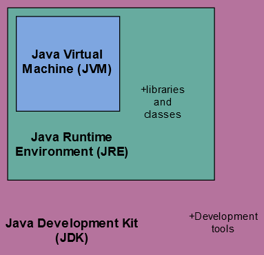

JRE : Java Runtime Environment
JRE is an acronym for Java Runtime Environment,
is a software layer that runs on top of a computer’s operating system software
and provides the class libraries
and provides the minimum requirements for executing a Java application.
It consists of the Java Virtual Machine (JVM), core classes, and supporting files for the smooth execution of the program.
The JRE is one of three interrelated components for developing and running Java programs.
The other two components are as follows:
1. Java Development Kit, or JDK
2. Java Virtual Machine, or JVM

The source Java code gets compiled and converted to Java bytecode.
If we wish to run this bytecode on any platform, we require JRE.
It is the implementation of JVM. It physically exists.
The JRE loads classes, verify access to memory, and retrieves the system resources.
Programs created with the JRE will run on all of the JVM's.
In this way, the Java Runtime Environment is what enables a Java program to run in any operating system without modification.
JRE Runtime Architecture
The JRE and JDK interact with one another to create a sustainable runtime environment that enables the seamless execution of Java-based applications in virtually any operating system.
The following make up the JRE runtime architecture:
1. ClassLoader
2. Bytecode verifier
3. Interpreter
JDK : Java Development Kit
The Java Development Kit (JDK) is an implementation of either one of the Java Platform, Standard Edition, Java Platform, Enterprise Edition, or Java Platform, Micro Edition platforms released by Oracle Corporation in the form of a binary product aimed at Java developers on Solaris, Linux, macOS or Windows.
The JDK includes the Java Runtime Environment (JRE), an interpreter (java), a compiler (javac), an archiver (jar), a documentation generator (javadoc), and some other development tools. The Java Runtime Environment itself consists of the Java Virtual Machine (JVM), supporting files, core classes and a few other resources to finish the development of a Java application. Since the introduction of the Java platform, it has been by far the most widely used Software Development Kit (SDK).

Typically, if one is only interested in running Java programs on their machine or browser, They only need to install JRE. However, if they would like to develop an application and do Java programming, they will need JDK. The JDK is available for 64-bit x64 macOS (and that version also works with Rosetta 2), while an early access build (developer preview) from Microsoft is also available to support recent Apple M1 Macs.
The JDK also comes with a complete Java Runtime Environment, usually called a private runtime, due to the fact that it is separated from the "regular" JRE and has extra contents. It consists of a Java Virtual Machine and all of the class libraries present in the production environment, as well as additional libraries only useful to developers, such as the internationalization libraries and the IDL libraries. Copies of the JDK also include a wide selection of example programs demonstrating the use of almost all portions of the Java API